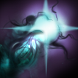
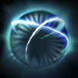
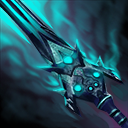
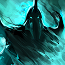

28+20
28+20  20+12
20+12  15+5
15+5Abaddon, the Lord of Avernus, is a melee strength hero known as one of the most versatile characters in Dota due to his rather low mana dependence, short spell cooldowns and a large number of viable item choices. His ability to help sustain his allies and himself plus his strong tower diving capacity give him solid lane presence. Many of his abilities offer a large sum of utility, which makes him a strong support hero. Mist Coil serves as both a single target nuke and heal that helps shift the sustainability of both allied and enemy heroes in a lane at his will, though sacrificing a portion of his own health. Aphotic Shield holds as one of the most useful abilities in the game, able to shield a target from some damage while also able to reflect said damage to a huge area. The most important aspect is how it is able to dispel many status effects such as slows and stuns. His other abilities allow him to become a mix between a semi-carry and tank. Abaddon's passive, Curse of Avernus, allows his attacks to not only slow down his enemy, but also increase the attack speed of any ally attacking the same target while also silencing the target after a set of attacks. With his ultimate, Borrowed Time, Abaddon is able to shift all non-HP-removal damage he receives into health. When not on cooldown, Borrowed Time may activate passively when his health falls under a certain threshold, even under the most dire situations. Due to his powerful spells and versatility, Abaddon is an excellent addition to any team.

Abaddon releases a coil of deathly mist that can damage an enemy unit or heal a friendly unit at the cost of some of Abaddon's health.
Cast Animation: 0.25+0.4
Cast Range: 575
Self Damage Percentage: 50%
Enemy Target Damage: 110/160/210/260 (Talent: 165/215/265/315)
Ally Target Heal: 110/160/210/260 (Talent: 165/215/265/315)
Projectile Speed: 1300

Summons dark energies around an ally unit, creating a shield that absorbs a set amount of damage before expiring. When the shield is destroyed it will burst and deal damage equal to the amount it could absorb to an area around it. Removes certain types of negative buffs and stuns on cast.
Cast Animation: 0.3+0.33
Cast Range: 550
Damage Radius: 675
Shield Capacity: 110/140/170/200 (Talent: 210/240/270/300)
Burst Area Damage: 110/140/170/200 (Talent: 210/240/270/300)
Duration: 15

Abaddon strikes an enemy, slowing the target's movement speed. If the target gets hit 4 times, they become affected by a chilling curse causing them to be silenced and slowed, and all attacks against them gain an attack speed boost.
Required Hits: 4 (Talent: 3)
Initial Move Speed Slow: 10%/15%/20%/25% (Aghanim Shard: 20%/25%/30%/35%)
Curse Move Speed Slow: 15%/30%/45%/60%
Curse Attack Speed Bonus: 40/60/80/100
Initial Debuff Duration: 5
Curse Debuff Duration: 4.5
Speed Buff Duration: 4

When activated, all damage dealt to you will heal instead of harm. Most negative buffs will also be removed. If the ability is not on cooldown, it will automatically activate if your health falls below 400.
Cast Animation: 0+0
Passive Health Threshold: 400
Duration: 4/5/6 (Aghanim Scepter: 7/8/9)
Aghanim Scepter Radius: 1600
Aghanim's Scepter Mist Coil Trigger Health Threshold: 525
Aghanim's Scepter Aura Linger Duration: 0.5